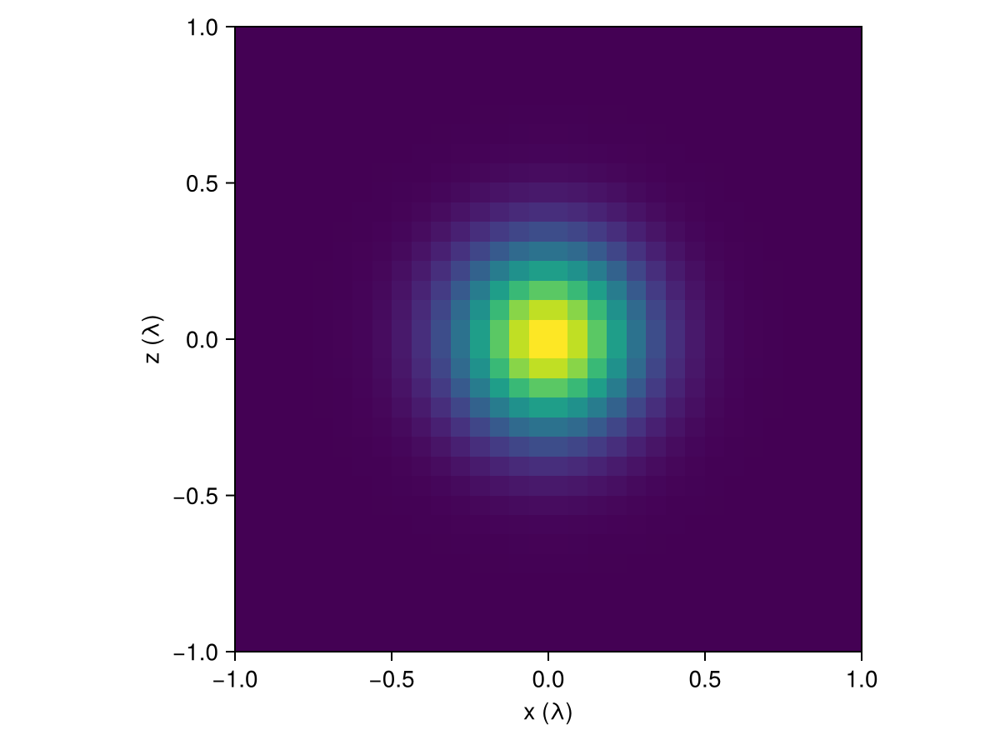
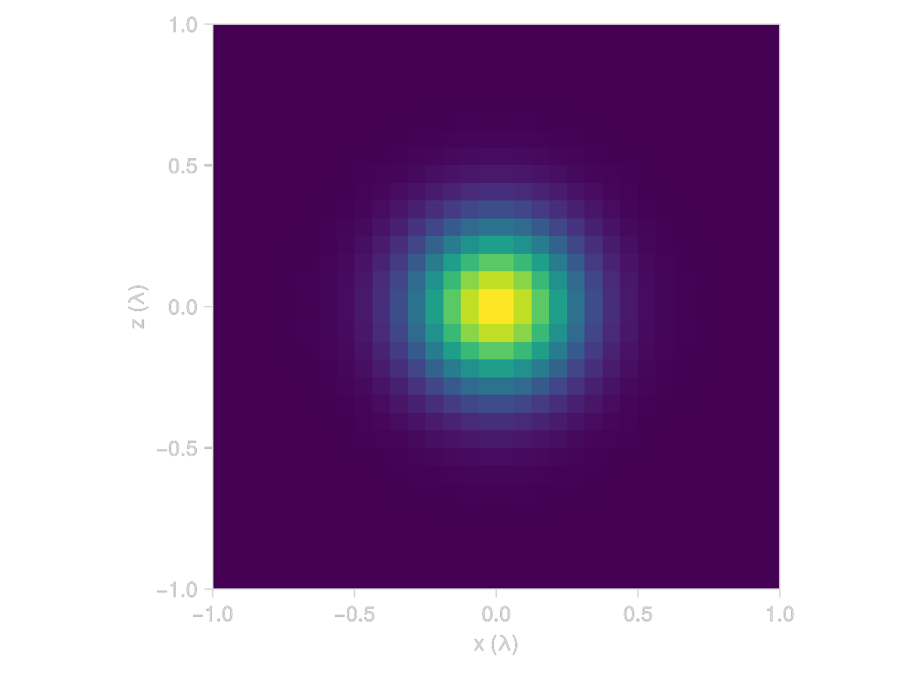

Volumes and Fields
Before we can compute anything, we need somewhere to put currents and fields. In Gila that place is a volume, which is a box of identical cuboid cells, and a field lives on it as one complex 3-vector per cell. Here we build a volume, put a current on it and look at it, and then check that the norm of a field comes out the same whatever cells we use (which the norm of its raw array does not).
using GilaElectromagnetics, LinearAlgebra, CairoMakieVolumes
A GlaVol takes the number of cells along each axis and the size of one cell. Lengths are in wavelengths (convention 1.1), so a cell of 1//16 is a sixteenth of a wavelength on a side, and 32 of them make a cube two wavelengths across.
volume = GlaVol((32, 32, 32), (1//16, 1//16, 1//16))GlaVol: 32×32×32 cells of 1//16 λ — 2//1 × 2//1 × 2//1 λ³ at (0, 0, 0)Note that the cell size is a Rational, and this is deliberate. Whenever two volumes interact (as a source and a target, or as the pieces of a refined mesh), Gila has to know whether their cells line up, which is a question with an exact answer for rationals but not for floats (0.1 isn't even representable as a float).
The cell counts have to be even (convention 5.1), so the center of the box falls on a cell corner and no cell is centered on it. The cell centers along each axis are stored in volume.grd, and along $x$ they are
volume.grd[1]-31//32:1//16:31//32The volume is centered on the origin unless we pass a center as a third argument, so for example this one is shifted by half a wavelength along $x$.
GlaVol((32, 32, 32), (1//16, 1//16, 1//16), (1//2, 0//1, 0//1))GlaVol: 32×32×32 cells of 1//16 λ — 2//1 × 2//1 × 2//1 λ³ at (1//2, 0, 0)Fields
zeros(volume) makes a GlaFld, a flat vector with three entries per cell. It stores ComplexF32 by default, and zeros(ComplexF64, volume) gives double precision when we need it.
field = zeros(volume);discretize! fills a field from a function of the cell center. We use a $z$-polarized Gaussian of width $σ = 0.2$ (we will need it again later on).
σ = 0.2
gaussian(r) = (0, 0, exp(-sum(abs2, r) / (2σ^2)))
discretize!(field, gaussian);Each entry is the average of the current over its cell (the pulse basis of section 3.2). Sampling at the center is the midpoint rule for that average, which is accurate as long as the cells resolve the current.
The flat vector runs over the cells first and the three components last. regionview(field, 1) reshapes it into a (cells..., 3) array without copying, and that is the easiest way to look at a slice. The 1 is the region number, which only matters for the refined meshes of a later tutorial (a plain GlaVol has a single region). We take the $xz$ plane at cell row 16 along $y$, the row just below $y = 0$, and component 3, which is $p_z$.
p_z = regionview(field, 1)[:, 16, :, 3]
x = Float64.(volume.grd[1]) # cell centers along x, as floats for plotting
z = Float64.(volume.grd[3])
fig = Figure()
ax = Axis(fig[1, 1]; xlabel = "x (λ)", ylabel = "z (λ)", aspect = DataAspect())
heatmap!(ax, x, z, real(p_z))
fig

coordinates goes through the cells in the same order as the field and gives the center, the cell volume $ΔV$ (in $λ^3$) and the region of each cell. It is defined on a CompositeVolume, the list of regions a refined mesh is made of, so for a plain GlaVol we wrap it in a composite with one region first.
first(coordinates(CompositeVolume(volume)))((-0.96875, -0.96875, -0.96875), 0.000244140625, 1)Norms and Inner Products
The entries of a field are averages, so the array alone has no record of how big its cells are. The physical norm is an integral,
\[\norm{f}^2 = \int \abs{f}^2 \dd{V} \approx \sum_n \abs{\mathsf{f}_n}^2 ΔV,\]
and norm (as well as dot) on a GlaFld puts the $ΔV$ in for us (convention 3.1). For our Gaussian the integral is $(πσ^2)^{3/2}$, and to see that the answer does not depend on the mesh we put the same current on cells half the size.
fine_volume = GlaVol((64, 64, 64), (1//32, 1//32, 1//32))
fine_field = zeros(fine_volume)
discretize!(fine_field, gaussian)
(coarse = norm(field)^2, fine = norm(fine_field)^2, exact = (π * σ^2)^(3 / 2))(coarse = 0.044546627f0, fine = 0.04454662f0, exact = 0.044546623974653664)Both meshes agree with the integral. The plain array norm, on the other hand, grows with the number of cells, and halving the cell size multiplies it by $\sqrt{8}$.
norm(parent(field)), norm(parent(fine_field))(13.507886f0, 38.20607f0)So we keep currents and fields as GlaFlds and use dot and norm on them. If we work with the raw arrays (parent(field)), every inner product needs the $ΔV$ put in by hand.
This page was generated using Literate.jl.